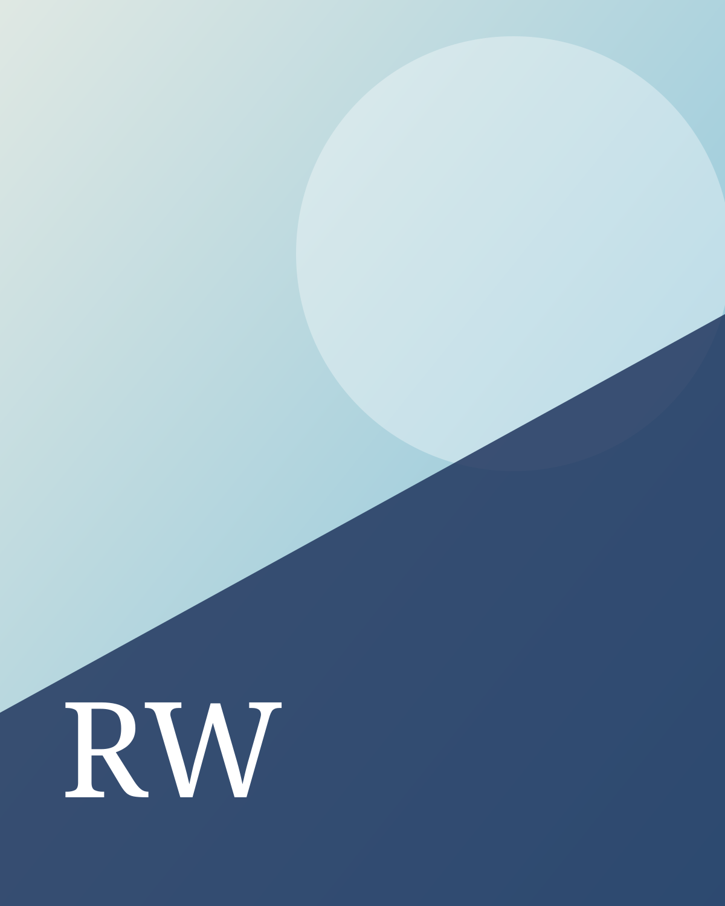
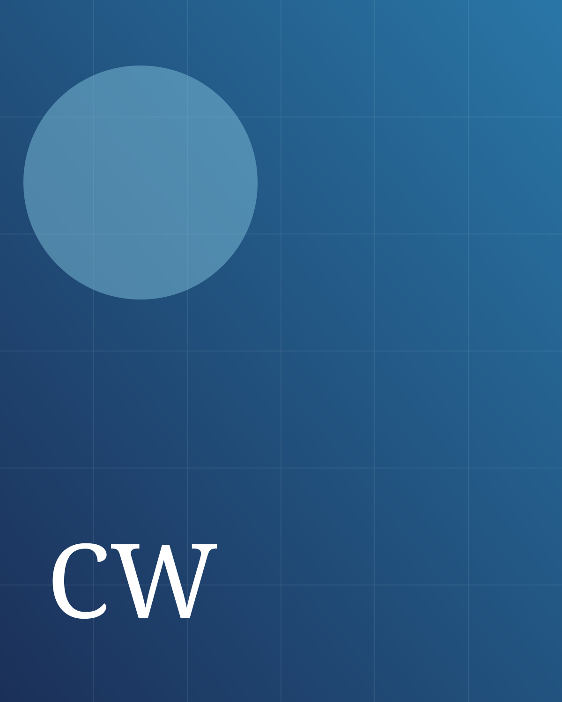

Medizin
Gesamtpneumologie, Thoraxonkologie, Präzisionsmedizin und strukturierte Versorgungspfade.
wass.at
Zwei professionelle Profile aus Medizin, Recht und Technologie. Verbunden durch fundierte Analyse, klare Strukturen und verantwortungsvolle Strategie.

PlatzhalterbildPneumologie · Thoraxonkologie · Forschung · Lehre
Fachärztin für Innere Medizin und Pneumologie mit klinischem und wissenschaftlichem Schwerpunkt in der Thoraxonkologie. Das Profil verbindet patientenzentrierte Versorgung, klinische Forschung, universitäre Lehre und fachübergreifende Zusammenarbeit.
Gesamtpneumologie, Thoraxonkologie, Präzisionsmedizin und strukturierte Versorgungspfade.
Lungenkrebsfrüherkennung, klinische Forschung, Versorgungsqualität und geschlechtersensible Medizin.
Universitäre Lehre, Facharztausbildung, Mentoring und wissenschaftliche Nachwuchsförderung.
Interdisziplinäre Koordination, Tumorboards, Qualitätsmanagement und Personalentwicklung.
Diese Website dient der beruflichen und wissenschaftlichen Information. Sie ersetzt keine medizinische Beratung. Medizinische Termin- und Behandlungsanfragen sind ausschließlich an die zuständige Gesundheitseinrichtung zu richten.
Recht · Legal Tech · KI · Legal Operations
Jurist mit Schwerpunkt Legal Tech, künstliche Intelligenz, Legal Operations und Wissensmanagement. Im Mittelpunkt stehen skalierbare Rechtsprozesse, verantwortungsvolle Automatisierung und praxistaugliche Governance.
Strategischer Einsatz von KI in Rechtsabteilungen und wissensintensiven Prozessen.
Prozessdesign, Standardisierung, Intake, Automatisierung und messbare Steuerung.
Strukturierte Wissenssysteme, Microsoft 365, Copilot, Markdown und offene Standards.
Human-in-the-Loop, klare Verantwortlichkeiten und nachvollziehbare Kontrollmodelle.
Keine Rechtsberatung. Diese Website dient ausschließlich der beruflichen Information. Inhalte ersetzen keine individuelle rechtliche Prüfung oder Beratung.

PlatzhalterbildWerte
Fundierte fachliche Grundlagen und kontinuierliches Lernen.
Komplexität erfassen, Zusammenhänge erkennen und Entscheidungen vorbereiten.
Klare Prozesse, Rollen und verständliche Wissensmodelle.
Langfristige Ziele in verantwortungsvolle und wirksame Umsetzung übersetzen.